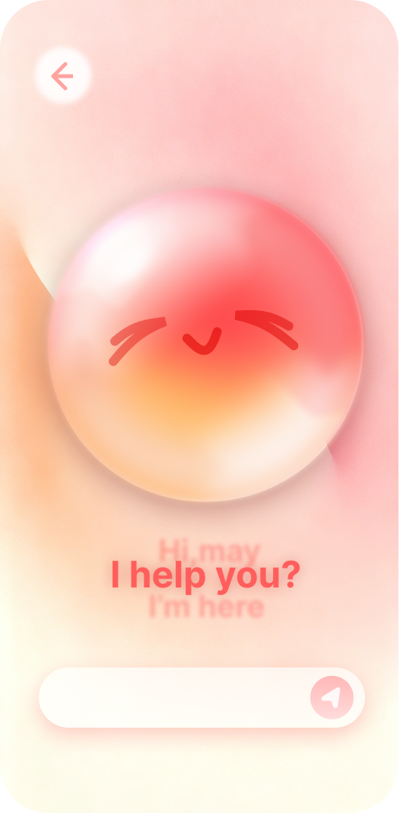
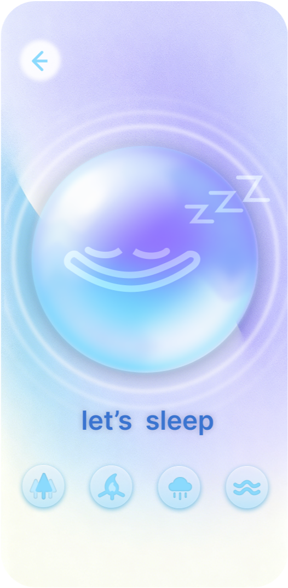
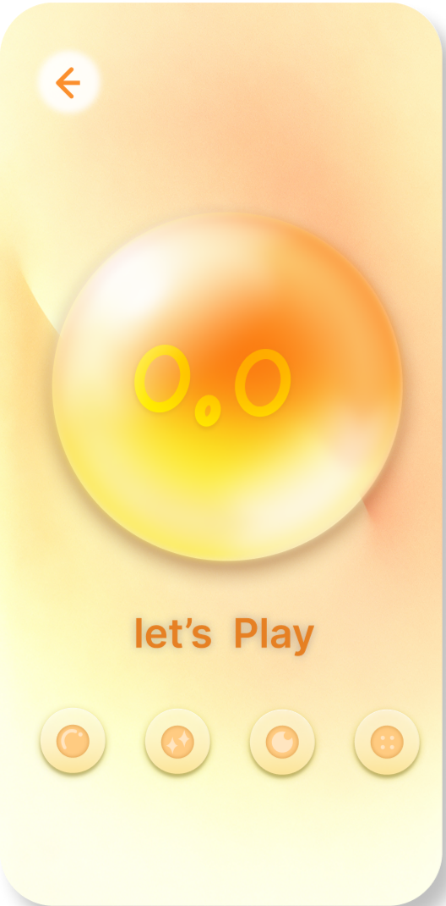

情绪疗愈三空间
三个空间，三种疗愈——在数字世界中安放你的每一种情绪。
Overview
IsleSoul 心屿是一个面向 18–30 岁年轻人的低门槛、私密、非临床情绪陪伴与睡前放松工具。它不替代心理治疗，而是把日常情绪困扰拆成三个更容易进入的任务流：想说、睡不着、想放空。
产品边界从“治疗”调整为低暴露、可匿名、随时可进入的情绪支持，避免给用户过重的心理负担。
睡眠问题比心理求助更少污名，也天然适合白噪音、轻互动和短会话设计。
三空间结构对应三类高频场景，让用户不用先判断自己“严重不严重”，而是直接选择当下需要的陪伴方式。
Concept
IsleSoul 心屿将情绪支持拆解为三种核心需求——说出来、静下来、动起来——并分别赋予一个角色空间。用户通过垂直滑动在三空间之间自由切换，每种空间提供不同的交互方式和感官体验。
System

AI情绪对话陪伴，歌词式滚动回复。右上角情绪扫描仪通过5题测试智能推荐空间。

4种白噪音（森林/篝火/雨声/海浪），点击球体切换播放，声波动画随音律动。

4种解压材质（泡泡/水晶泥/木鱼/泡泡纸），点击触发粒子动画与视频反馈。
当前流程
用户进入后默认落在念念空间，先用柔和情绪球与低刺激画面建立安全感，再引导进入倾诉、放松或解压路径。
Process
基于调研，心屿被定位为年轻人的低门槛、私密、非临床情绪陪伴工具。重点不是诊断或干预，而是帮助用户在睡前、独处或情绪上来时更容易开始自我安放。
调研建议将 MVP 聚焦为“想说、睡不着、想放空”。因此三空间不只是视觉分区，而是分别承接匿名倾诉、睡前放松和 3 分钟内轻互动解压。
念念对应倾诉，使用更柔软、靠近陪伴感的暖色；眠眠对应放松，使用低刺激蓝紫色；松松对应解压，使用更明亮的黄色和触发感表情。
用户不需要返回菜单反复选择，而是通过上下滑动在倾诉、放松、解压之间切换。情绪扫描仪作为快速入口，把模糊感受转换为推荐路径。
Outcome
Reflection
交互设计 · 部分视觉设计 · 前端开发（Vibe Coding）
Figma · nano banana · trea · seedance · 海螺AI · Kimi API · HTML/CSS/JS